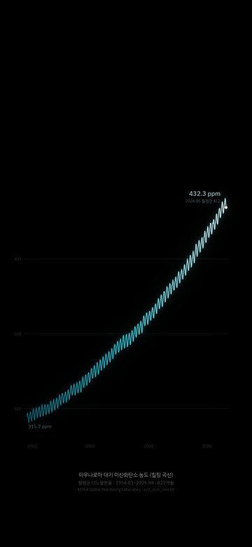
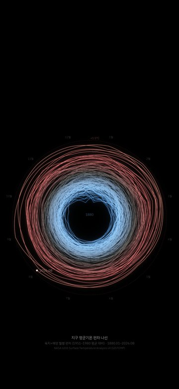
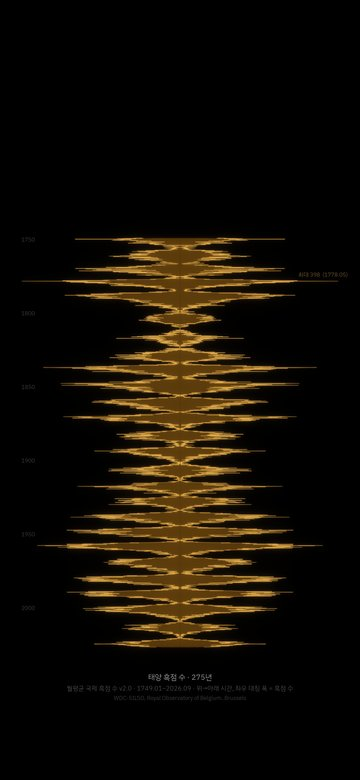
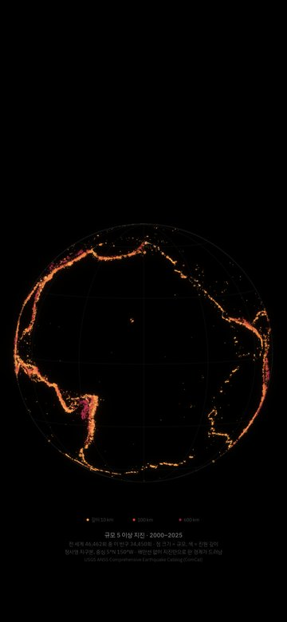
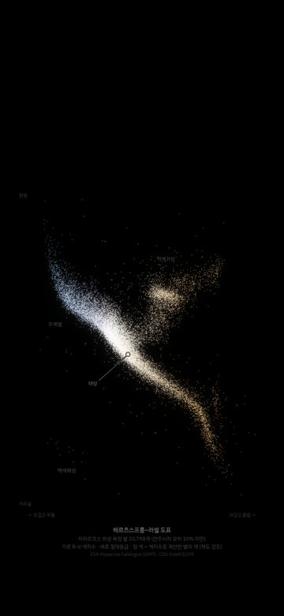
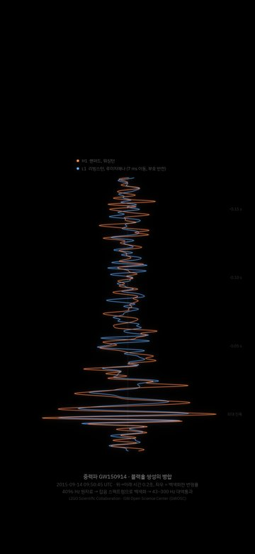
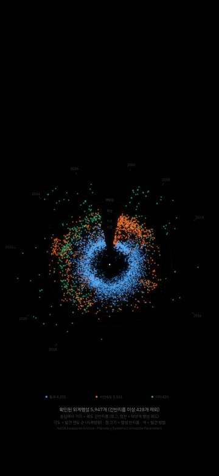
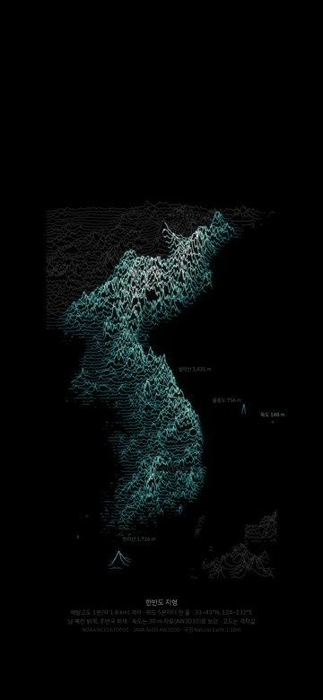
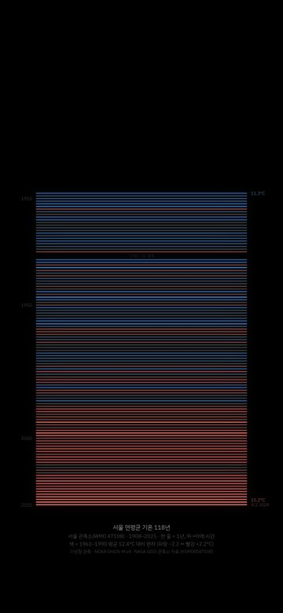
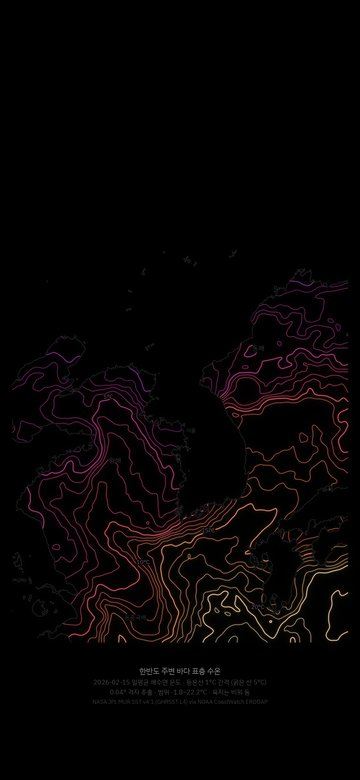

그림을 누르면 아이폰 크기(1179x2556) PNG 원본이 내려받아집니다. 배경은 순수 검정이라 OLED 화면에서 꺼진 픽셀로 보입니다. 클로드가 만든 파일 그대로입니다.

01마우나로아 CO₂ 월평균 1958~2026 (킬링 곡선)NOAA GML
02지구 평균기온 편차 나선 1880~2026NASA GISTEMP v4
03월평균 흑점 수 1749~2026WDC-SILSO (벨기에 왕립천문대)
04규모 5 이상 지진 46,462개(2000~2025), 색은 진원 깊이USGS ComCat
05별 20,798개의 HR도ESA 히파르코스 (CDS VizieR)
06첫 중력파 관측 GW150914LIGO GWOSC
07외계행성 5,947개NASA Exoplanet Archive
08한반도 지형(독도는 JAXA AW3D30 30 m 로 보강)NOAA ETOPO1 + JAXA ALOS AW3D30 + Natural Earth
09서울 연평균 기온 1908~2025(1931~32 결측)기상청 관측 (NOAA GHCN v4 / NASA GISS 경유)
102026-02-15 한반도 주변 바다 등온선NASA JPL MUR SST v4.1클로드 코드에 아래 말을 한 번 붙여넣었습니다. 클로드는 15분 27초 동안 NOAA·NASA·USGS·ESA·LIGO 같은 곳에서 원자료를 직접 내려받아 그 값으로 10장을 그렸습니다.
처음 결과의 한반도 지도에는 독도가 없었습니다. 클로드는 1분 격자(약 1.8 km) 자료에는 해발 0 m 넘는 칸이 하나도 없어서 독도를 임의로 그려 넣지 않았다고 보고했습니다. 같은 세션에서 「08번 지도에 독도도 넣어줘」 한 줄을 더 보냈더니, 위성 지형 자료 세 개(NASADEM 57 m · Copernicus 37 m · JAXA AW3D30 148 m)를 비교해 공식 높이 168.5 m 에 가장 가까운 일본 JAXA 의 AW3D30 으로 독도를 그렸습니다.
저장소 밖 빈 폴더에서 클로드 코드를 열고 이 말을 한 번 붙여넣었습니다
폰 잠금화면용 배경화면 열 장 만들어줘. 배경은 거의 검은색(OLED)이고, 그림은 전부 실제 과학 데이터를 인터넷에서 내려받아 그 값으로 그려. 주제는 알아서 고르되 세 장은 한국 데이터로. 한 장마다 무슨 데이터인지 작은 글씨로 적고, 아이폰 크기(1179x2556) PNG 로 wallpapers 폴더에
08번 지도에 독도도 넣어줘
클로드 코드 세션 기록과 화면에서 읽은 값 · 한 번 실행
| 무엇 | 값 | 어디서 |
|---|---|---|
| 혼자 만든 시간 | 15분 27초 | 끝 화면 「Churned for 15m 27s」 |
| 장수 · 크기 | 10장 · 1179x2556 | wallpapers 폴더 PNG |
| 지진 점 | 46,462개 | USGS ComCat 규모 5 이상 2000~2025 |
| 독도가 빠졌던 이유 | 1.8 km 격자 | 클로드 첫 보고 |
| 독도 서도 높이 | 148 m | JAXA AW3D30(NASADEM 57 m · Copernicus 37 m · 공식 168.5 m) |
08번 지도는 실제 축척이라 폰 화면에서 독도는 몇 픽셀짜리 점입니다. 옆에 「독도 148 m」 라벨이 붙어 있습니다.
한국 데이터 세 장은 기상청·공공데이터포털 API 에 인증키가 필요해서, 같은 관측을 담은 국제 저장소(NOAA·NASA)에서 받았다고 클로드가 보고했습니다. 05번은 별 색의 채도를 높였고, 07번은 같은 해 발견된 행성끼리 순서를 무작위로 정했습니다(그림 속 설명에도 적혀 있습니다).
「독도도 넣어줘」 는 두 번 보냈습니다. 첫 번째는 제 쪽 디스크가 꽉 차서 화면 기록이 깨졌고, 같은 말을 한 번 더 보낸 결과가 위 그림입니다.